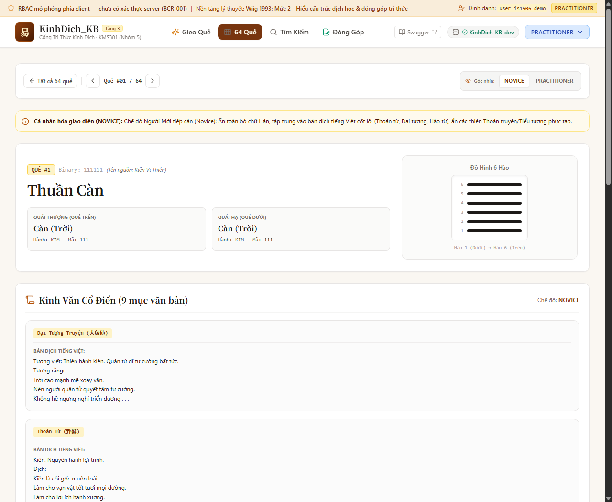
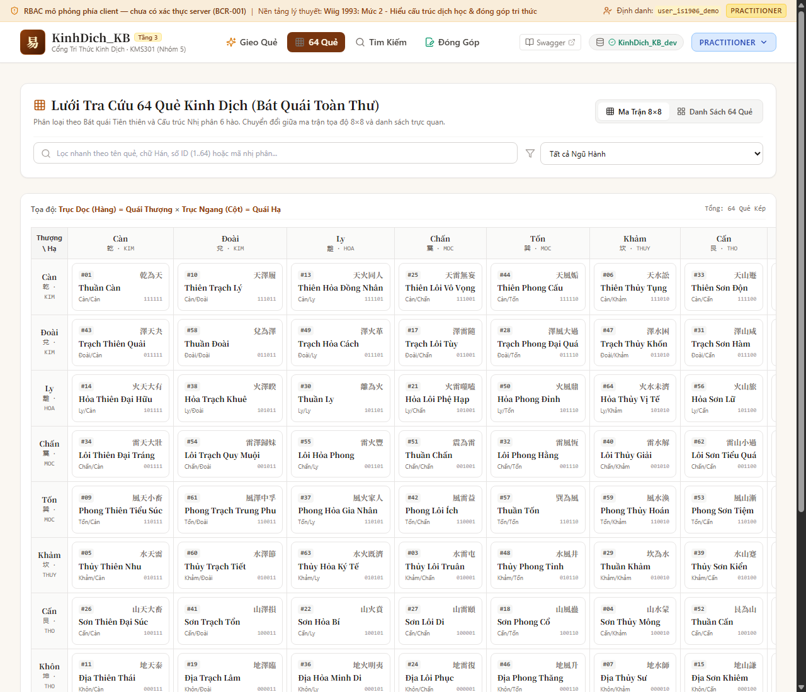
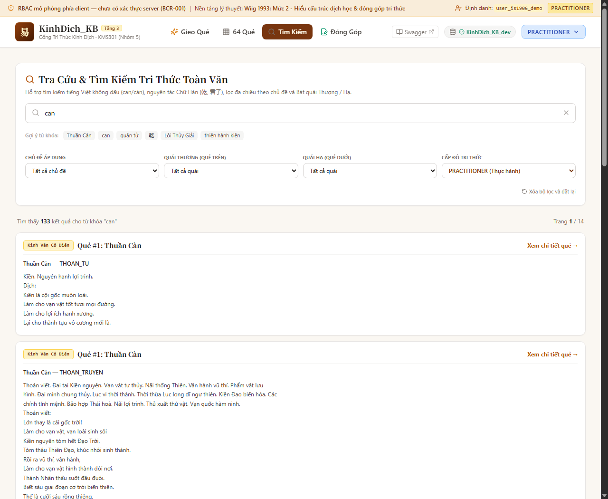
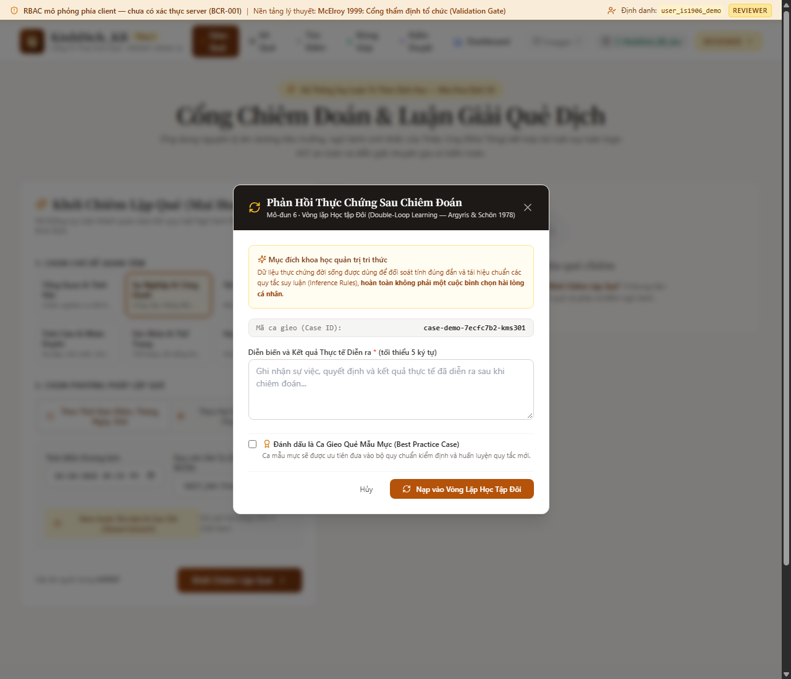

DỰ ÁN KINH DỊCH KB — MÔN HỌC QUẢN TRỊ TRI THỨC (KMS301)
Đại Học FPT · Lớp IS1906 · Nhóm 5
CẨM NANG NGƯỜI DÙNG · QUICK START GUIDE
HƯỚNG DẪN SỬ DỤNG NHANH CỔNG TRI THỨC KINH DỊCH
Cách gieo quẻ, đọc hiểu lời khuyên "Nên Làm / Nên Tránh" và tra cứu 64 quẻ dịch chỉ trong 5 phút
Bạn là người mới bắt đầu? Đừng bận tâm về chữ Hán cổ, công thức phức tạp hay ngôn từ bói toán khó hiểu. Trang web này được thiết kế để trở thành người bạn đồng hành thông thái: giúp bạn hiểu rõ tình huống hiện tại, nhận diện điều gì nên làm, điều gì nên tránh và định hướng thời cơ hành động phù hợp nhất cho công việc và cuộc sống.
🌱 Dễ Hiểu & Đời Thường
Mặc định ẩn chữ Hán và thuật ngữ rườm rà. Lời luận giải rõ ràng, mạch lạc.
🎯 Định Hướng Hành Động
Chỉ rõ việc nên làm ngay, cạm bẫy cần tránh và thời hiệu trong 3–6 tháng.
🔍 Tra Cứu Toàn Diện
Tìm kiếm nhanh 64 quẻ bằng tiếng Việt không dấu (vd: gõ can ra quẻ Càn).
1. Làm Quen Giao Diện Trong 1 Phút
Giao diện web được thiết kế theo phong cách thư quán Á Đông thanh nhã, dễ sử dụng trên cả máy tính lẫn điện thoại. Dưới đây là 3 khu vực chính bạn sẽ dùng thường xuyên:
1. Gieo Quẻ (/divination)
Nơi bạn đặt câu hỏi và nhận lời khuyên xử thế cho công việc, tài chính, học tập, tình cảm.
2. 64 Quẻ Dịch (/hexagrams)
Thư viện bách khoa tra cứu ý nghĩa 64 quẻ, xem hình tượng quẻ và bài học tu thân.
3. Tìm Kiếm (/search)
Tìm kiếm nhanh theo tên quẻ, từ khóa ý nghĩa (vd: "bình an", "hanh thông", "kiên trì").
Chế Độ Đời Thường — Dành Riêng Cho Người Dùng Mới
Khi vừa vào trang web, hệ thống tự động kích hoạt Chế Độ Đời Thường (Mặc Định) và cấp vai trò Người Mới (NOVICE):
- Toàn bộ chữ Hán cổ, các công thức toán học và mã số kỹ thuật được ẩn đi.
- Mọi lời khuyên được chuyển thành ngôn ngữ hành động hàng ngày: "Điều bạn nên làm ngay", "Điều nên tránh", "Người đồng hành nên tìm".
- Nếu bạn muốn xem chữ Hán và kinh văn cổ xưa: Chỉ cần nhấp vào góc phải màn hình, chuyển vai trò sang Chuyên Gia (EXPERT).

Hình 1.1: Giao diện xem quẻ ở Cấp độ Người Mới (Novice) — Tinh gọn, thuần tiếng Việt và dễ áp dụng
💡 Mẹo nhỏ: Hệ thống hiển thị tối ưu trên màn hình điện thoại. Menu điều hướng nằm gọn trong biểu tượng ba dấu gạch ngang (≡) ở góc trên bên phải.
2. Cách Gieo Quẻ Mai Hoa — Chỉ Với 3 Bước Đơn Giản
Thuật toán Mai Hoa Dịch Số giúp bạn nắm bắt thời điểm hiện tại để đưa ra gợi ý hành động sáng suốt. Thao tác chỉ mất chưa đầy 30 giây:
1
Chọn Cách Gieo: Theo Thời Gian Thực (Khuyên Dùng)
Giữ nguyên lựa chọn mặc định "Gieo theo thời gian thực". Hệ thống sẽ tự động lấy Năm, Tháng, Ngày, Giờ hiện tại theo lịch Âm Việt Nam để lập quẻ một cách chuẩn xác nhất. (Nếu muốn, bạn có thể bấm "Nhập số tự chọn").
2
Chọn Lĩnh Vực Cần Hỏi (Chủ Đề)
Nhấp chọn lĩnh vực bạn đang băn khoăn nhất để hệ thống đưa ra lời khuyên sát thực tế:
💼 Sự nghiệp (CAREER)
💰 Tài chính (FINANCE)
❤️ Tình cảm (RELATIONSHIP)
🩺 Sức khỏe (HEALTH)
📚 Học tập (ACADEMIC)
🌐 Tổng quát (GENERAL)
3
Ghi Câu Hỏi & Nhấn "Tiến Hành Lập Quẻ"
Gõ ngắn gọn bối cảnh (ví dụ: "Tôi có nên đổi công việc sang công ty mới trong quý này không?"), sau đó bấm nút "Tiến Hành Lập Quẻ" màu hổ phách.
Tiến Trình 3 Quẻ Có Ý Nghĩa Gì?
Khi kết quả hiện ra, bạn sẽ thấy 3 quẻ dịch xếp cạnh nhau theo dòng chảy thời gian tự nhiên:
1. Quẻ Chủ (Gốc)
BẮT ĐẦU
Hoàn cảnh thực tại của bạn lúc này. Cho biết gốc rễ của vấn đề đang ở đâu.
2. Quẻ Hỗ (Trung gian)
DIỄN BIẾN
Các yếu tố ngầm ẩn, thử thách hoặc cơ hội sẽ phát sinh trong quá trình thực hiện.
3. Quẻ Biến (Chung cuộc)
KẾT QUẢ
Kết quả cuối cùng nếu bạn ứng xử đúng đắn và thuận theo quy luật vận động.
⚠️ Nguyên tắc vàng: Kinh Dịch không có kết quả xấu vĩnh viễn hay tốt mãi mãi. Nếu gặp quẻ chưa thuận lợi (Hung), đó là lời nhắc nhở bạn nên thận trọng, phòng thủ, trau dồi thêm để biến nguy thành an.
3. Cách Đọc Kết Quả — "Điều Bạn Nên Làm Ngay"
Ngay dưới kết quả quẻ, hãy chú ý đến khối nổi bật nhất: Bản Định Hướng Hành Động. Đây là phần đúc kết thực tiễn nhất dành riêng cho bạn:
Bản Định Hướng Hành Động · Sự Nghiệp
Cục Diện: Thời Vận Thuận Lợi Khởi Sắc
ĐẠI CÁT
Xu hướng chung: Nội lực vững vàng được ngoại cảnh hỗ trợ. Đây là thời cơ tốt để triển khai kế hoạch đã ấp ủ.
⏱ Thời hiệu dự báo: Có tác dụng mạnh nhất trong 3 đến 6 tháng tới.
✓ Điều Bạn Nên Làm
- Chủ động đề xuất ý tưởng mới với cấp trên.
- Tìm kiếm người dẫn dắt (mentor) đáng tin cậy.
- Kiên định và chuẩn bị kỹ hợp đồng.
✕ Điều Bạn Nên Tránh
- Tránh nóng vội đòi hỏi thành quả tức thì.
- Không vướng vào tranh chấp vụn vặt.
- Tránh tự phụ trước các cam kết miệng.
👥 Người nên hợp tác: Người điềm đạm, minh bạch, giữ chữ tín.
🧭 Hướng ưu tiên: Tây Bắc hoặc Chính Tây thuận lợi cho giao dịch.
Ý Nghĩa Của Nhãn Cát / Bình / Hung
| Nhãn Trạng Thái |
Ý Nghĩa Thời Thế |
Tâm Thế Hành Động Khuyên Dùng |
| ĐẠI CÁT / TIỂU CÁT |
Thời cơ thuận lợi, thiên thời địa lợi nhân hòa. |
Tự tin hành động, mở rộng quan hệ nhưng giữ đức khiêm tốn. |
| BÌNH HÒA |
Cục diện cân bằng, tĩnh lặng, chưa có đột biến. |
Giữ nguyên hiện trạng, tích lũy nội lực, chuẩn bị kỹ càng. |
| TIỂU HUNG / ĐẠI HUNG |
Ngoại cảnh trắc trở, có rủi ro cản trở hoặc thị phi. |
Phòng thủ cẩn trọng, kiểm tra lại quy trình, tránh mạo hiểm tiền bạc. |
Khối Lời Khuyên AI (AI Advice)
Phía dưới thẻ hành động là lời bình giải tự nhiên từ Trí tuệ Nhân tạo (Gemini). AI được kiểm soát chặt chẽ bằng 10 rào chắn bảo vệ để không bao giờ nói quá, không bịa đặt và luôn tuân thủ nguyên tắc đạo đức Dịch lý.
4. Tra Cứu 64 Quẻ & Tìm Kiếm Nhanh Chóng
Hệ thống cung cấp hai công cụ tra cứu cực kỳ tiện lợi giúp bạn tìm hiểu ý nghĩa của bất kỳ quẻ nào trong 64 quẻ Kinh Dịch:
A. Lưới 64 Quẻ (/hexagrams)
Xem theo dạng Ma Trận 8×8 hoặc Dạng Thẻ. Lọc nhanh các quẻ theo ngũ hành Kim, Mộc, Thủy, Hỏa, Thổ.

Hình 4.1: Lưới tra cứu 64 quẻ trực quan
B. Tìm Kiếm Nhanh (/search)
Gõ tiếng Việt không dấu: can ra quẻ Càn, truan ra quẻ Truân. Tìm theo từ khóa ý nghĩa: "vượt khó", "khiêm tốn".

Hình 4.2: Tìm kiếm toàn văn thông minh
Xem Chi Tiết Quẻ & Bản Dịch Kinh Điển
Khi bấm vào một quẻ bất kỳ (ví dụ Quẻ Thuần Càn), bạn sẽ đọc được trọn vẹn:
- Lời quẻ gốc (Thoán từ): Lời dạy tổng quát về vận mệnh của quẻ.
- Hình tượng tự nhiên (Đại tượng): Bài học rút ra từ trời đất (ví dụ: "Trời vận động mạnh mẽ, người quân tử phải tự cường không ngừng nghỉ").
- Ý nghĩa 6 hào vị: Diễn biến từ lúc còn ẩn nhẫn tích lũy (Hào 1) đến lúc thời cơ bay cao (Hào 5) và bài học đề phòng kiêu ngạo (Hào 6).
5. Phản Hồi Thực Tế, Lưu Ý An Toàn & Mẹo Hay
A. Gửi Phản Hồi Thực Chứng ("Quẻ có ứng nghiệm không?")
Sau khi sự việc diễn ra trên thực tế (sau 1 tuần hoặc 1 tháng), bạn hãy quay lại trang Gieo quẻ, bấm nút "Gửi Phản Hồi Thực Chứng" trên kết quả quẻ cũ:
- Chọn kết quả thực tế đời sống: Sự việc đã diễn ra là Cát (Thuận lợi), Bình hòa hay Hung (Trắc trở).
- Ghi chú cảm nhận. Đóng góp này sẽ giúp hệ thống tự học hỏi và tối ưu hóa dự báo ngày càng chính xác hơn!

Hình 5.1: Cửa sổ gửi phản hồi thực tế giúp hoàn thiện hệ thống
B. 4 Lưu Ý Vàng Khi Sử Dụng Kinh Dịch
1. Tâm Thành Thì Quẻ Ứng
Chỉ gieo khi có việc băn khoăn thực sự. Tránh bấm thử nghiệm liên tục nhiều lần cho cùng một việc.
2. Đức Năng Thắng Số
Quẻ chỉ báo trước xu thế. Thái độ cầu thị và hành động chuẩn mực hoàn toàn có thể chuyển biến vận mệnh.
3. An Toàn Sức Khỏe & Tài Chính
Kinh Dịch không thay thế bác sĩ khám bệnh hay chuyên gia tài chính. Luôn tham vấn người có chuyên môn.
4. Cẩm Nang Tu Dưỡng
Lúc khó khăn thì kiên nhẫn tích lũy, lúc hanh thông thì khiêm nhường san sẻ để giữ bền vững.
C. Giải Đáp Thắc Mắc Nhanh (FAQ)
Q: Tôi có cần biết chữ Hán để dùng trang web không?
Hoàn toàn không. Trang web mặc định dịch toàn bộ sang tiếng Việt trong sáng, dễ hiểu cho người mới.
Q: Gieo quẻ vào lúc nào là tốt nhất?
Bất kỳ thời điểm nào khi tâm trí bạn bình tĩnh, tập trung và có một thắc mắc thực sự cần định hướng hành động.